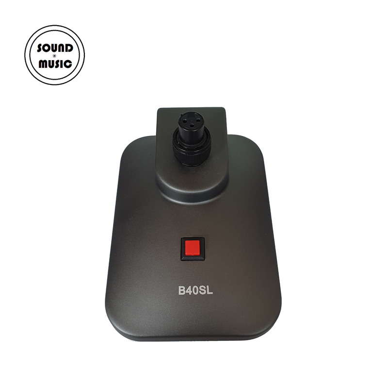

구스넥 마이크를 탁자·강대상·연단 위에 안정적으로 세울 수 있는 탁상형 마이크 데스크 스탠드. XLR 3핀 퀵 마운트 방식으로 마이크를 돌려 고정하며, 상단의 ON/OFF 스위치로 간편하게 음성을 제어할 수 있습니다. 충격과 진동을 차단하는 데스크 스탠드 구조로 테이블 접촉음을 최소화합니다.

구스넥 마이크 전용 탁상형 스탠드. XLR 3핀 퀵 마운트 구조와 ON/OFF 스위치, 회전 잠금 메커니즘을 갖추어 회의실·강단·방송 부스 등 고정 설치 환경에 최적화되어 있습니다.
B40SL은 탁자·연단·강대상·회의 테이블 등 평평한 표면에 두고 사용하는 마이크 데스크 스탠드입니다. 입력부에는 3핀 XLRF 리셉터클이, 출력부에는 3핀 XLRM 리셉터클이 탑재되어, 산업 표준 XLRM 3핀 방식의 구스넥 마이크를 위에서 꽂은 뒤 너트를 돌려 단단히 고정할 수 있습니다.
상단의 빨간색 스퀘어 스위치는 ON/OFF 기능을 담당하여, 발언자가 마이크를 손으로 만지지 않고도 음성을 차단·개방할 수 있습니다. 바닥면에는 충격·진동을 흡수하는 구조가 적용되어 테이블에서 전달되는 기계적 소음을 효과적으로 줄여 줍니다. 강의·회의·예배 등 장시간 고정 수음이 필요한 환경에서 구스넥 마이크와 함께 사용하기에 이상적입니다.
B40SL 데스크 스탠드의 핵심 포인트입니다.
B40SL은 간단한 3단계로 마이크 체결과 신호 연결을 완료할 수 있습니다.
B40SL의 상세 사양입니다.
| 모델명 | B40SL |
|---|---|
| 타입 | Microphone Desk Stand (탁상형 마이크 스탠드) |
| 호환 마이크 | XLRM 3핀 타입 구스넥 마이크 / 퀵 마운트형 마이크 |
| 입력 포트 | 3-pin XLRF 리셉터클 (상단) |
| 출력 포트 | 3-pin XLRM 리셉터클 (하단) |
| 스위치 | ON/OFF 스퀘어 스위치 (상단) |
| 고정 방식 | Screw lock · 회전식 나사 잠금 (Rotate to Lock / Unscrew to Unlock) |
| 설치 환경 | 연단·강대상·회의 테이블 등 평평한 표면 |
| 색상 | 블랙 |
| 권장소비자가 | 60,500원 / 개 (VAT 포함) |
| 매뉴얼 버전 | VER 1.2 |
※ 본 표는 제조사 공식 매뉴얼(VER 1.2)의 기재 사항을 기준으로 작성되었습니다. 치수·중량 등 비기재 항목은 별도 문의 바랍니다.
B40SL 데스크 스탠드의 대표적인 설치 환경입니다.
B40SL과 함께 사용하면 좋은 Sound+Music 구스넥 마이크 및 액세서리입니다.